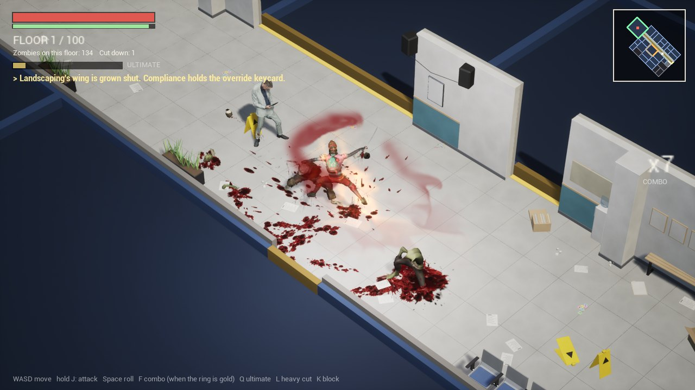

First playable: a samurai, a tower, one room at a time
The idea on the first night was small enough to finish: an isometric crawl up an office tower full of zombies. It was playable before midnight.
The working title was Samurai Fight Fight, and the pitch fitted in one line: a lone samurai fights up a high-rise during a zombie outbreak, room by room.
What was there on night one
- An isometric camera over one office floor, in Unreal Engine 5.8.
- A sword, a slash, and office workers who did not stay down politely.
- No level file. The game mode builds the floor in C++ when you arrive: walls, doors, desks, enemies.
That last decision was made in the first hour and it has shaped everything since. A hundred floors is a silly number to build by hand. It is a reasonable number to generate.


The same night
Ten minutes after the first commit, the placeholder samurai was replaced by the ronin girl who became Rin. Before midnight the floors had furniture with physics: desks and chairs that block you, and that get knocked across the room when a fight goes through them.
What it was not yet
It had no story, no name worth keeping, and no reason for the tower to be full of zombies. Those arrived over the next two days.